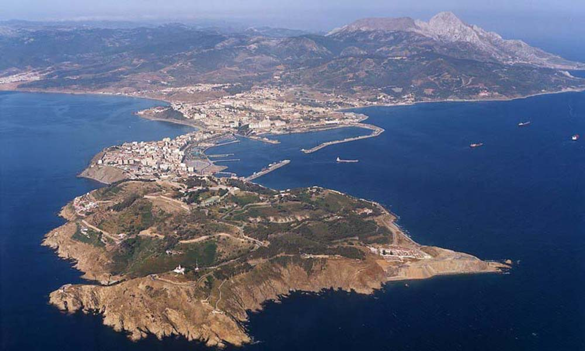

Bienvenidos a la web con información sobre Ceuta
Información

18,5
km²
83.386
Habitantes
4
Culturas
Ceuta es una ciudad autónoma española, situada en la península tingitana, en la orilla africana del estrecho de Gibraltar, en el lado oriental de este. Está bañada por las aguas del mar Mediterráneo, mientras que al oeste y suroeste limita con Marruecos. Su población es de 83 039 habitantes (INE 2023). Con una extensión superficial de 18,5 km², tiene una densidad de 4592,38 hab/km², en la que conviven ciudadanos de diferentes religiones: la cristiana, la musulmana, la judía y, en menor medida, la hindú. Las zonas urbanizadas se sitúan en el istmo y en parte del campo exterior. El centro urbano y los barrios más antiguos se localizan cerca del puerto y por la ladera del monte Hacho, en una pequeña península conocida como Almina.